Accurate LiDAR-camera calibration is essential for robust multi-modal perception. Targetless approaches avoid manual setup but remain limited by the scarcity of discriminative cross-modal features. Recent methods address this by reconstructing the scene within a differentiable model, enabling extrinsic optimization through dense photometric supervision. Among these, 3D Gaussian Splatting (3DGS) has been widely adopted as a geometric proxy that bridges LiDAR and camera within a single differentiable framework. However, since 3DGS was originally designed for novel view synthesis, existing methods tend to prioritize rendering quality, causing the proxy geometry to drift from the true LiDAR structure. We propose a framework that preserves the metric geometry of the Gaussian proxy by aggregating multi-view LiDAR observations for dense depth supervision and blocking photometric gradients from updating the Gaussian spatial parameters. We validate our method on public driving datasets, where it consistently outperforms existing targetless methods in calibration accuracy.
Gaussians are initialized on LiDAR points and rendered into the camera view, so the extrinsic $\mathbf{T}_{cl}$ can be optimized by minimizing image-domain losses. Two losses do the work.
Aligns the extrinsics by matching the rendered image to the observed one. The signal reaches $\mathbf{T}_{cl}$ through the learned Gaussian color.
Warps pixels into an adjacent frame with the rendered depth and compares ground-truth intensities. The signal is mediated by depth, not color.
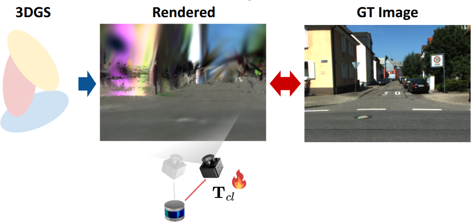
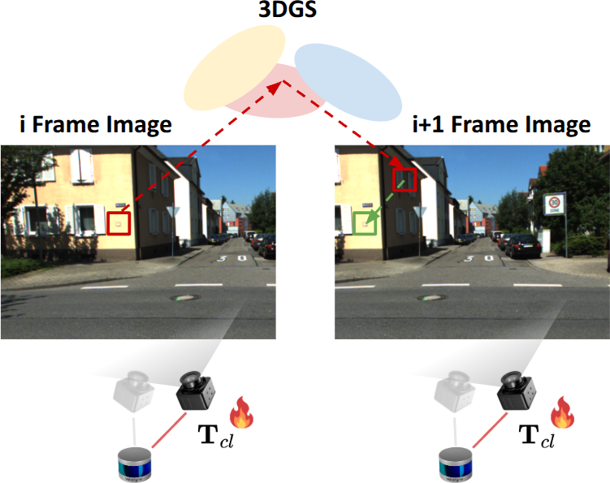
Both losses reach the extrinsics through the renderer. The Jacobian $\partial\Phi(\mathcal{G},\mathbf{T}_{cw})/\partial\mathbf{T}_{cl}$ depends on the current proxy state $\mathcal{G}$ — so every extrinsic update is only as trustworthy as the geometric fidelity of the Gaussian proxy.
A single LiDAR scan supervises only a small fraction of the image. Everywhere else the optimizer is free to move Gaussians to reduce photometric residuals — and it does, drifting the proxy away from the true LiDAR structure.
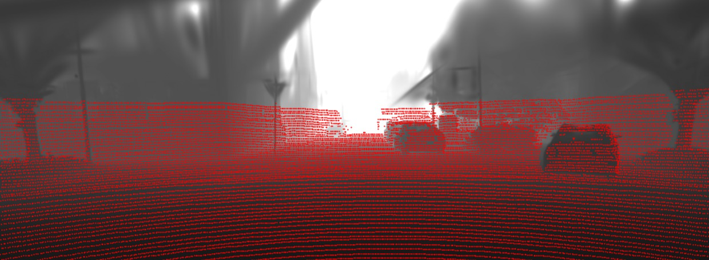
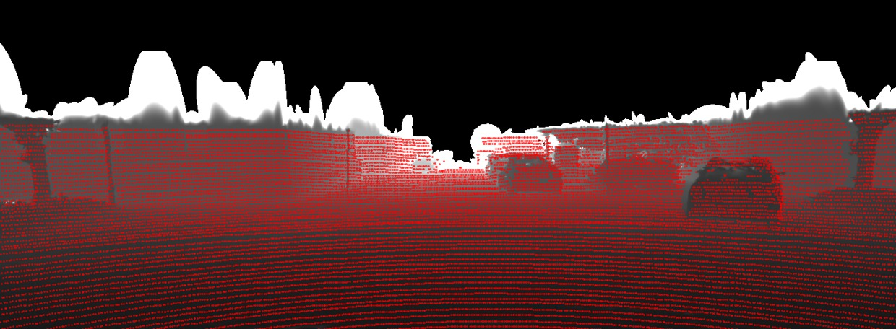
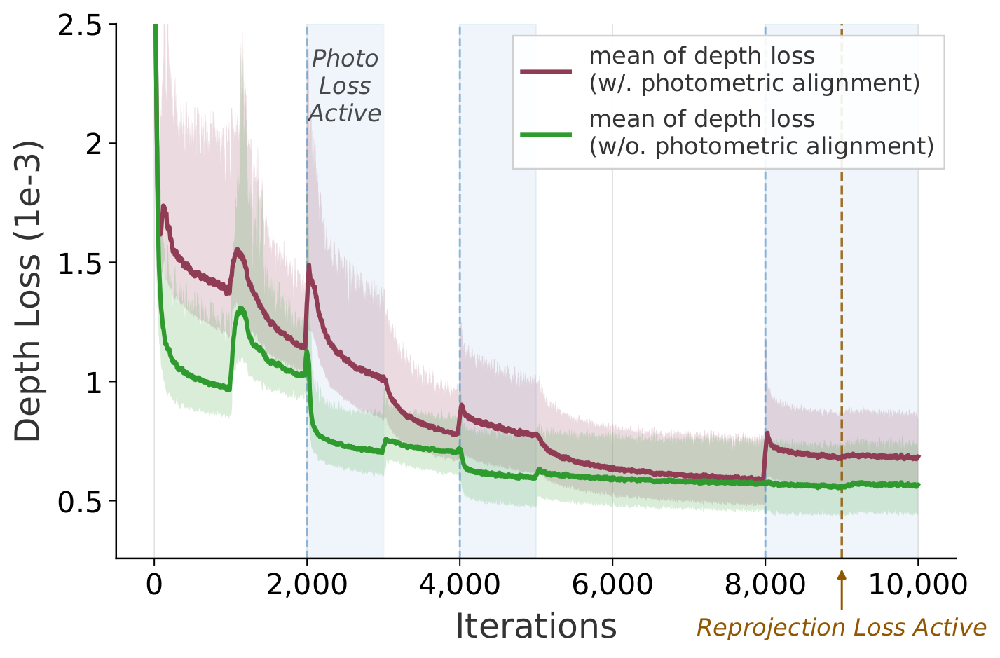
Two components that keep the Gaussian proxy metrically faithful while the extrinsics are still being refined. They cooperate but stay gradient-decoupled: DDA governs where the geometry may sit, GD decides what is allowed to move it.
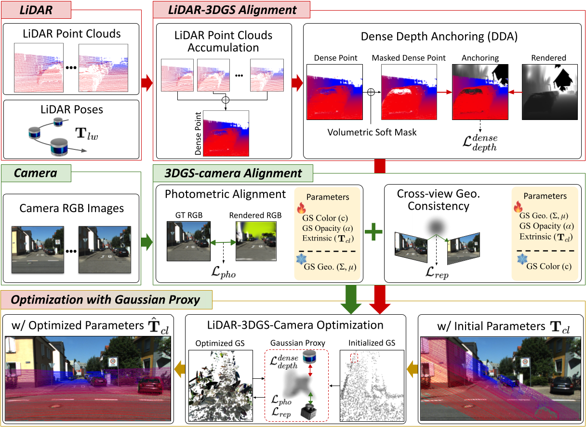
A single scan leaves most of the image unconstrained, so we accumulate every LiDAR observation into a global cloud $\mathcal{P}_{global}=\bigcup_t (\mathbf{T}^t_{lw})^{-1}\mathcal{P}^t$ and project it back into the current view. The resulting dense anchor $D^{dense}_l$ covers far more of the image than one scan and pins the Gaussian spatial parameters $(\mu,\Sigma)$ even where the current frame has no returns.
Accumulation introduces occlusion ambiguity — points seen from a distant viewpoint land on foreground objects. We use the rendered depth itself as a continuous visibility prior, down-weighting anything that sits far behind the Gaussian surface:
$W_{vis}(\mathbf{p}) = \sigma\!\left(\beta \cdot \big(D_{rend}(\mathbf{p})(1+\tau) - D^{dense}_l(\mathbf{p})\big)\right)$
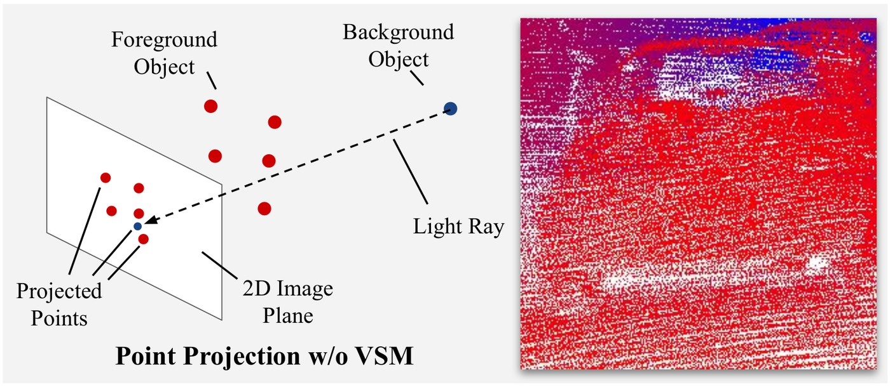
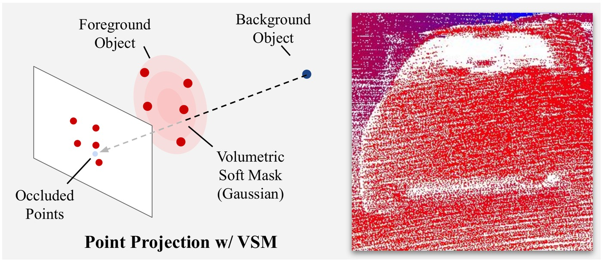
We apply a stop-gradient to the spatial parameters inside the color rendering path, so texture-driven residuals can no longer deform the geometry:
$\mathcal{L}^{decoupled}_{pho} = \mathcal{D}_{photo}\Big(I^t,\, \Phi_{color}(\text{sg}[\mu,\Sigma],\alpha,c,\mathbf{T}_{cl}\mathbf{T}^t_{lw})\Big)$
Crucially, GD is applied only to $\mathcal{L}_{pho}$. The reprojection loss keeps its gradients to $(\mu,\Sigma)$: it compares ground-truth intensities through depth-induced correspondences without ever touching the learned Gaussian color, so it encourages view-consistent structure rather than per-view texture fitting.
$\mathcal{L}^{GeoP}_{total} = \mathcal{L}^{decoupled}_{pho} + \lambda_{rep}\mathcal{L}_{rep} + \lambda^{sparse}_{depth}\mathcal{L}^{sparse}_{depth} + \lambda^{dense}_{depth}\mathcal{L}^{dense}_{depth}$
Five random seeds per entry, reported as mean (standard deviation). Bold is best, underlined is second best.
| Seq. | GST [16] | Claim [35] | RobustCalib [37] | HiGS-Calib [33] | GeoP-Calib (Ours) | |||||
|---|---|---|---|---|---|---|---|---|---|---|
| Er(°) | Et(m) | Er(°) | Et(m) | Er(°) | Et(m) | Er(°) | Et(m) | Er(°) | Et(m) | |
| KITTI-360 | ||||||||||
| Seq. 1 | 0.351(0.080) | 0.326(0.018) | 0.663(0.409) | 0.142(0.148) | 0.202(0.021) | 0.059(0.006) | 0.111(0.016) | 0.036(0.006) | 0.124(0.046) | 0.031(0.006) |
| Seq. 2 | 4.631(2.543) | 0.394(0.254) | 0.614(0.219) | 0.056(0.030) | 0.272(0.046) | 0.107(0.019) | 0.177(0.031) | 0.087(0.004) | 0.145(0.020) | 0.059(0.007) |
| Seq. 3 | 0.991(0.199) | 0.335(0.212) | 0.232(0.073) | 0.073(0.041) | 0.307(0.047) | 0.076(0.002) | 0.103(0.096) | 0.177(0.106) | 0.074(0.030) | 0.059(0.002) |
| Seq. 4 | 1.011(0.176) | 0.316(0.210) | 0.809(0.641) | 0.296(0.253) | 0.246(0.068) | 0.133(0.005) | 0.167(0.161) | 0.118(0.111) | 0.110(0.042) | 0.071(0.001) |
| Seq. 5 | 0.751(0.423) | 0.206(0.071) | 0.284(0.110) | 0.079(0.039) | 0.248(0.003) | 0.109(0.012) | 0.141(0.010) | 0.098(0.001) | 0.153(0.030) | 0.093(0.003) |
| Avg. | 1.547(1.570) | 0.315(0.099) | 0.520(0.303) | 0.129(0.126) | 0.255(0.055) | 0.097(0.028) | 0.140(0.059) | 0.103(0.055) | 0.121(0.041) | 0.063(0.021) |
| KITTI | ||||||||||
| Seq. 1 | 2.626(1.151) | 0.251(0.082) | 0.247(0.125) | 0.044(0.016) | 0.305(0.051) | 0.050(0.006) | 0.112(0.008) | 0.042(0.002) | 0.105(0.009) | 0.034(0.001) |
| Seq. 2 | 1.310(0.294) | 0.232(0.058) | 0.371(0.107) | 0.092(0.030) | 0.482(0.417) | 0.074(0.014) | 0.201(0.003) | 0.056(0.001) | 0.160(0.010) | 0.054(0.001) |
| Seq. 3 | 1.106(0.678) | 0.167(0.050) | 0.219(0.066) | 0.052(0.017) | 0.300(0.018) | 0.083(0.008) | 0.239(0.016) | 0.052(0.005) | 0.224(0.018) | 0.023(0.001) |
| Seq. 4 | 0.512(0.186) | 0.413(0.159) | 0.354(0.078) | 0.067(0.018) | 0.298(0.102) | 0.084(0.009) | 0.269(0.011) | 0.062(0.001) | 0.250(0.024) | 0.052(0.001) |
| Seq. 5 | 2.801(1.475) | 0.327(0.178) | 0.411(0.056) | 0.051(0.013) | 0.375(0.150) | 0.119(0.012) | 0.209(0.007) | 0.065(0.003) | 0.201(0.016) | 0.056(0.002) |
| Avg. | 1.671(0.892) | 0.278(0.085) | 0.352(0.074) | 0.082(0.022) | 0.352(0.071) | 0.082(0.022) | 0.206(0.053) | 0.055(0.008) | 0.188(0.051) | 0.044(0.013) |
GeoP-Calib attains the lowest rotation error on 7 of 10 sequences and the lowest translation error on 7 of 10, and improves translation over HiGS-Calib on every sequence.
| GD | DDA | VSM | Er(°) | Et(m) | T(s) |
|---|---|---|---|---|---|
| 0.122(0.031) | 0.077(0.022) | 875(16) | |||
| ✓ | ✓ | 0.117(0.044) | 0.068(0.021) | 923(16) | |
| ✓ | 0.127(0.042) | 0.067(0.022) | 866(21) | ||
| ✓ | ✓ | 0.124(0.045) | 0.066(0.024) | – | |
| ✓ | ✓ | ✓ | 0.121(0.041) | 0.063(0.021) | 922(21) |
KITTI-360, averaged over the five sequences. VSM is a sub-component of DDA and is not defined without it; the GD + DDA row was not timed. Runtime is the mean per sequence on an RTX 4070 Ti with a Ryzen 3600. Translation improves with every component added, while rotation stays comparable to Base — GD suppresses the far-range texture cues that would otherwise refine rotation.
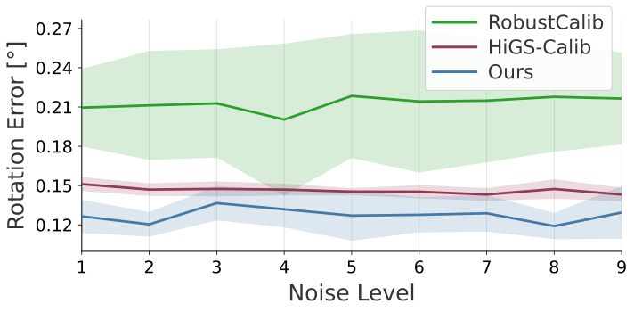
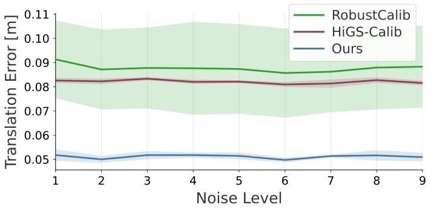
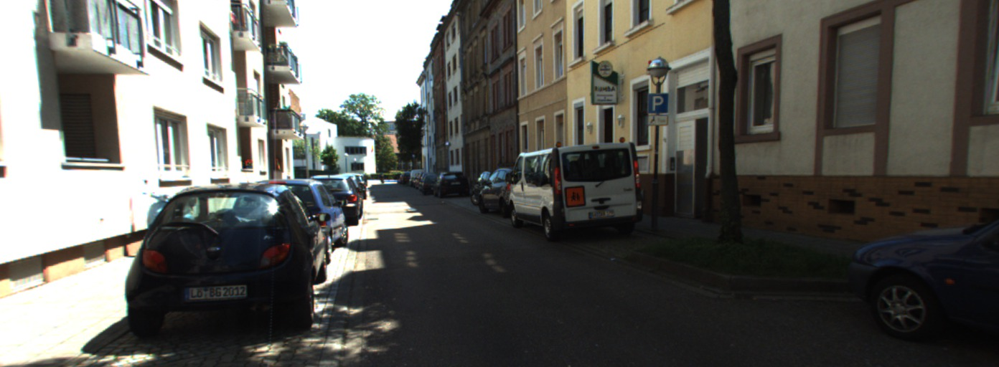
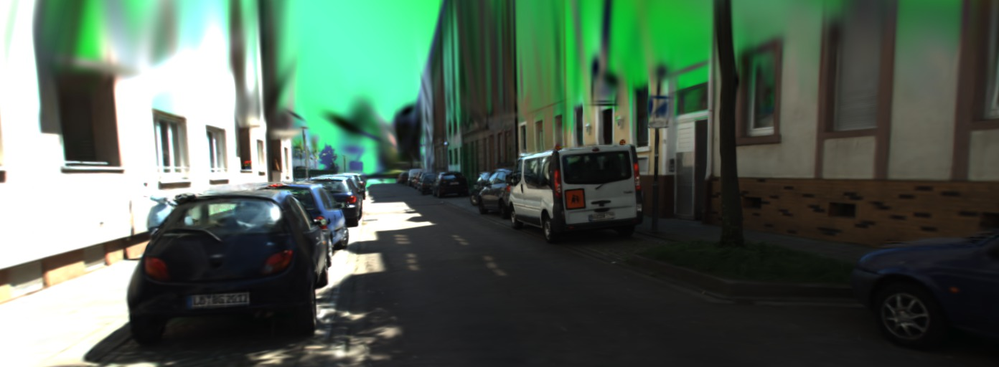
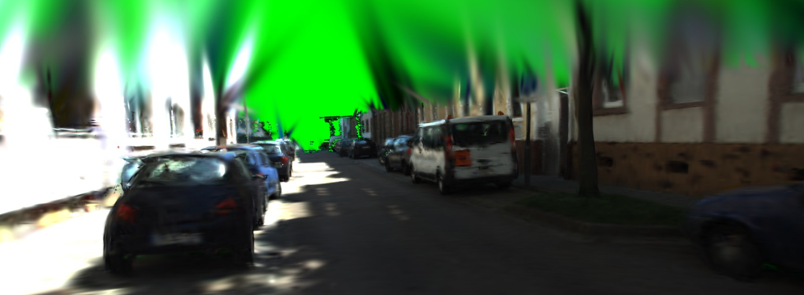
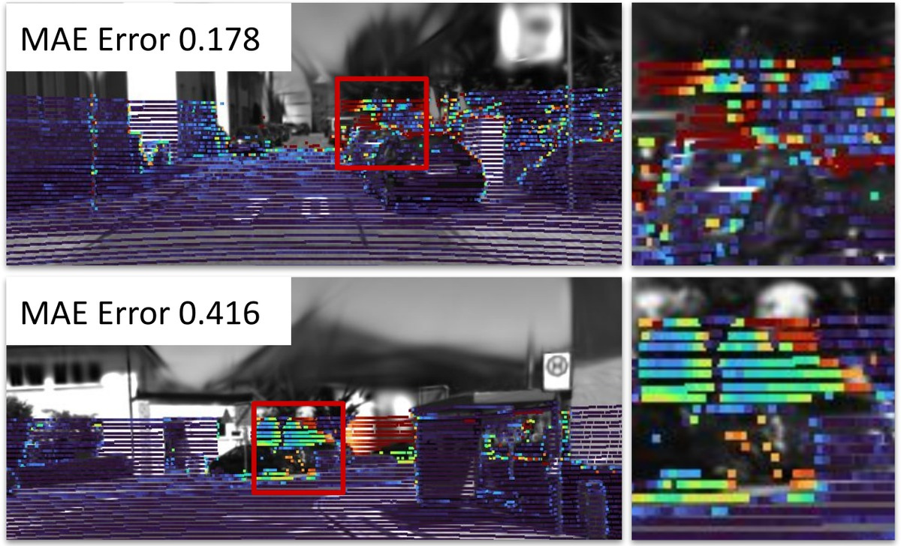
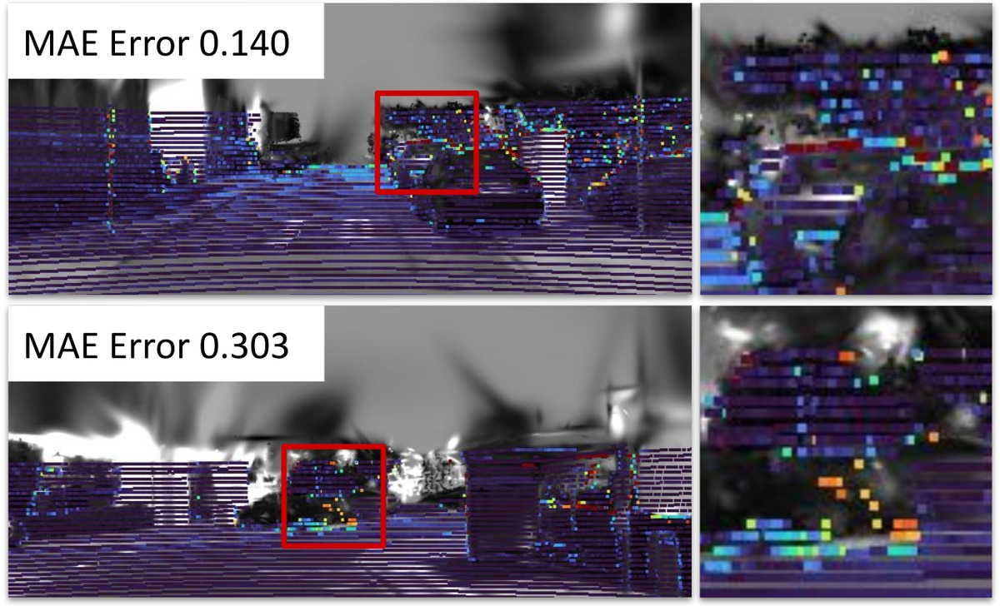
Every sequence optimized from a perturbed initialization. The estimated camera pose converges onto the ground truth, the projected LiDAR locks onto the image, and the rotation and translation errors fall in step. Each clip is a 5 × 3 grid — full screen is worth it.
@article{kwak2026geometry,
title={Geometry-Preserving in 3D Gaussian Splatting for LiDAR-Camera Extrinsic Calibration},
author={Kwak, Kyoleen and Kim, Daeho and Lee, Jeong Woon and Hwang, Hyoseok},
journal={arXiv preprint arXiv:2606.20103},
year={2026}
}This work was supported in part by the National Research Foundation of Korea (NRF) grant funded by the Korean government (MSIT) under Grant No. RS-2025-00564137, in part by the Convergence security core talent training business support program under Grant IITP-2023-RS-2023-00266615, and in part by the Technology Innovation Program (RS-2025-25453780, Development of a National Humanoid AI Robot Foundation Model for Multi-Task Applications) funded by the Ministry of Trade Industry & Resources (MOTIR, Korea).